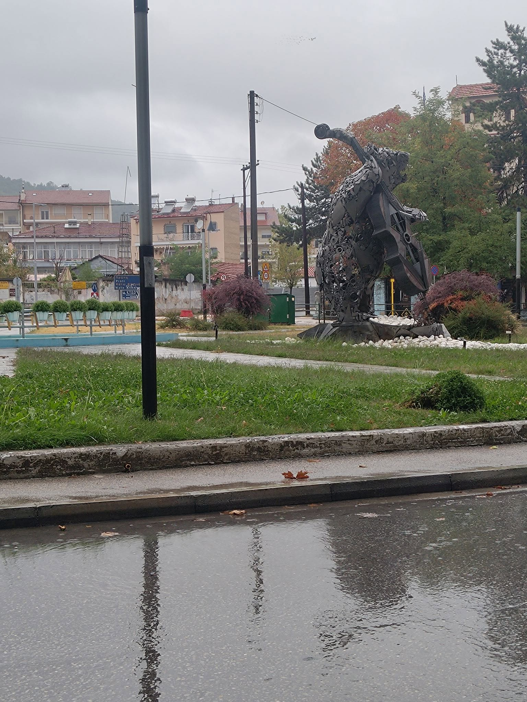

Όταν ξεκινήσαμε αυτή τη διαδρομή, το κάναμε με την απλή ανάγκη να μοιραστούμε όσα νιώθουμε και ζούμε καθημερινά. Να μιλήσουμε ανοιχτά για τον τόπο μας, με την ειλικρινή φροντίδα που έχουμε όλοι για τις γειτονιές μας, τους ανθρώπους μας και τις δυσκολίες που φέρνει ο χειμώνας, που εδώ στην περιοχή μας πιάνει νωρίς και είναι πάντα βαρύς.
Η κοινωνία μας έχει περάσει πολλά. Έχει πονέσει, έχει απογοητευτεί, έχει δει υποσχέσεις να γίνονται καπνός. Κι όμως, πίσω από την κούραση, υπάρχει μια αθόρυβη δύναμη. Μια αξιοπρέπεια που δεν λυγίζει εύκολα.
Μέσα από τους προβληματισμούς και τις σκέψεις που καταθέτει καθημερινά ο καθένας σας, καταλαβαίνουμε τη δύναμη που κρύβει αυτός ο τόπος. Μόνο έτσι, όταν κοιταζόμαστε στα μάτια, όταν ακούμε τον διπλανό μας και προχωράμε με καθαρές κουβέντες και πνεύμα συνεργασίας, θα αρχίσουμε να φτάνουμε βήμα-βήμα στον στόχο μας.
Ο τόπος μας δεν είναι μια απλή κουκκίδα στο χάρτη, ούτε ένα απομονωμένο μέρος όπως θέλουν να πιστεύουν κάποιοι από μακριά. Είναι οι άνθρωποί μας, η ιστορία μας, το πείσμα μας να κρατηθούμε όρθιοι και να πάμε μπροστά.
Γιατί όσο δύσκολοι κι αν είναι οι καιροί, όταν υπάρχει ειλικρίνεια και ενότητα, πάντα γεννιέται η ελπίδα. Μια ελπίδα που φέρνουν οι άνθρωποι γύρω μας, αυτοί που μάχονται καθημερινά σιωπηλά, μακριά από φωτογραφίες, τυμπανοκρουσίες και τα φώτα της δημοσιότητας.
Αυτοί οι άνθρωποι είναι η πραγματική μας δύναμη για να διεκδικήσουμε, χωρίς φωνές αλλά με ουσία, όλα όσα δικαιούμαστε, φέρνοντας πάλι το χαμόγελο στον τόπο μας. Όσο είμαστε ενωμένοι, τίποτα δεν πήγε χαμένο.
← Επιστροφή στα Άρθρα